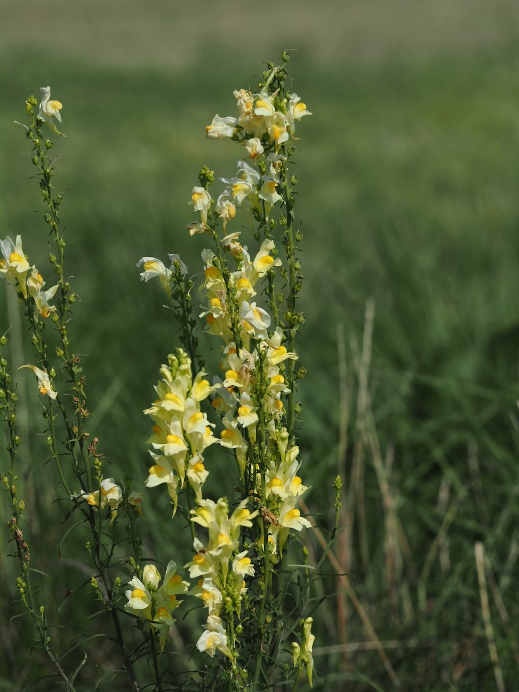
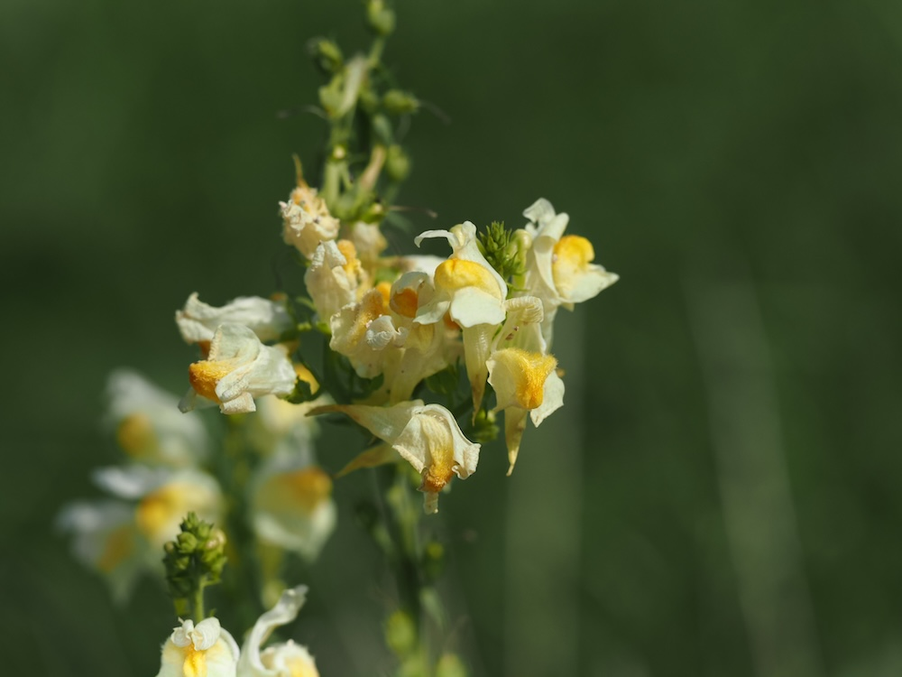

Mini-Löwenmaul für die Wegrand-Wiese — gelb mit oranger Zunge.



Mini-Löwenmaul
Das Echte Leinkraut sieht aus wie ein winziges Löwenmaul (mit dem es tatsächlich verwandt ist) — und funktioniert auch ähnlich. Der untere „Maul“-Lappen ist mit der Oberlippe so dicht verschlossen, dass nur kräftige Insekten (Hummeln!) ihn auseinanderdrücken können. Der charakteristische lange Sporn am Hinterende der Blüte enthält den Nektar — und ist nur für sehr lange Rüssel erreichbar.
Falschmünzer der Bestäubung
Es gibt eine Sorte kleiner Wildbienen, die zu kurzrüsslig ist, um an den Nektar zu kommen — und einen Trick gefunden hat: Sie BEISST den Sporn von außen auf und trinkt den Nektar „durch die Hintertür“. Die Pflanze hat dann die Bestäubung umsonst geliefert. So eine Bestäuber-Falschmünzerei ist in der Natur selten, aber faszinierend.
Wissenswertes & Merksätze
Erkennen leicht gemacht
Aufrechter, zarter Stängel mit schmalen, leinähnlichen Blättern (daher der Name) — wechselständig oder lose quirlig. Blütenstände dichte Trauben aus gelben Lippenblüten mit orangem Schlund und langem Sporn nach hinten.
Pionierpflanze auf Brache
Linaria vulgaris ist eine typische Pionierin auf Schuttflächen, Bahndämmen und gestörtem Boden. Sie wird oft als „Unkraut“ angesehen, ist aber eine wertvolle späte Sommerblüte für Hummeln und Schmetterlinge — und durchaus ansehnlich, wenn man sie genauer betrachtet.